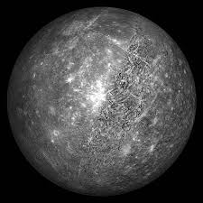
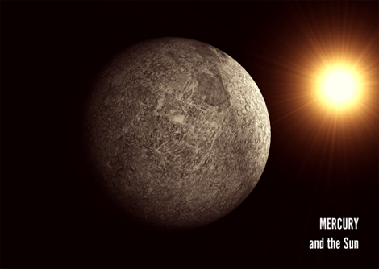

Mercur

- Mercur se roteste in jurul axei in 58 zile si 16 ore.
- Se învârte în jurul Soarelui (1 an mercurian), in 88 de zile.
- Temp maxima pe suprafata este de 350 ° C.
- Temperatura minima este de -170 ° C.
- Diametrul planetei este de 4,878 km,
- Gravitatia este 0,38 x din cea a Pamântului.
- Nu are luni, inele sau atmosfera.
- Trasatura dominanta sunt cratere.
- Mercur a fost vizitata de Mariner si sonda spatiala Messenger.

Mercur este planeta cea mai apropiata de Soare, înconjurându-l o data la fiecare 88 zile. Luminozitatea sa variaza între -2,0 si 5,5 în magnitudine aparenta, dar nu este usor de vazut fiindca cea mai mare separare unghiulara (cea mai mare elongatie) fata de Soare este de doar 28,3°, însemnând ca se poate vedea doar imediat dupa apusul Soarelui.